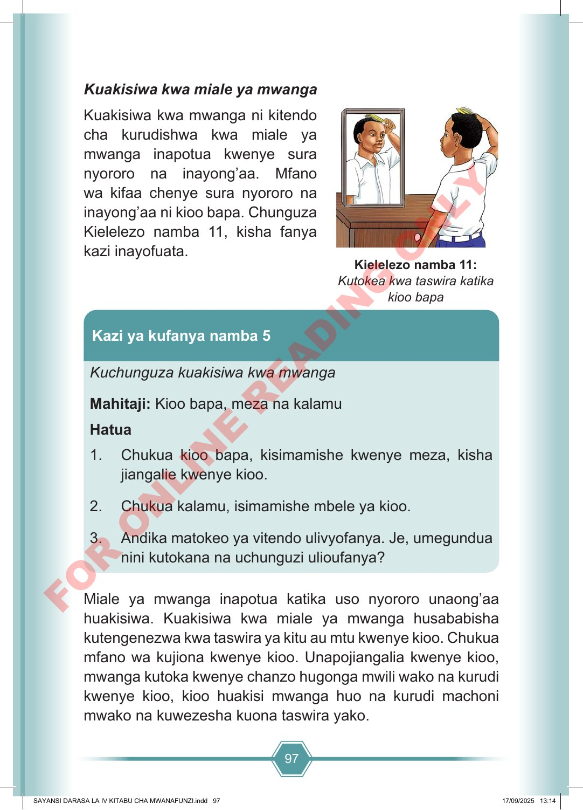

97 Kuakisiwa kwa miale ya mwanga Kuakisiwa kwa mwanga ni kitendo cha kurudishwa kwa miale ya mwanga inapotua kwenye sura nyororo na inayong’aa. Mfano wa kifaa chenye sura nyororo na inayong’aa ni kioo bapa. Chunguza Kielelezo namba 11, kisha fanya kazi inayofuata. Kuchunguza kuakisiwa kwa mwanga Mahitaji: Kioo bapa, meza na kalamu Hatua 1. Chukua kioo bapa, kisimamishe kwenye meza, kisha jiangalie kwenye kioo. 2. Chukua kalamu, isimamishe mbele ya kioo. 3. Andika matokeo ya vitendo ulivyofanya. Je, umegundua nini kutokana na uchunguzi ulioufanya? Kazi ya kufanya namba 5 Miale ya mwanga inapotua katika uso nyororo unaong’aa huakisiwa. Kuakisiwa kwa miale ya mwanga husababisha kutengenezwa kwa taswira ya kitu au mtu kwenye kioo. Chukua mfano wa kujiona kwenye kioo. Unapojiangalia kwenye kioo, mwanga kutoka kwenye chanzo hugonga mwili wako na kurudi kwenye kioo, kioo huakisi mwanga huo na kurudi machoni mwako na kuwezesha kuona taswira yako. Kielelezo namba 11: Kutokea kwa taswira katika kioo bapa SAYANSI DARASA LA IV KITABU CHA MWANAFUNZI.indd 97 SAYANSI DARASA LA IV KITABU CHA MWANAFUNZI.indd 97 17/09/2025 13:14 17/09/2025 13:14 F O R O N L I N E R E A D I N G O N L Y